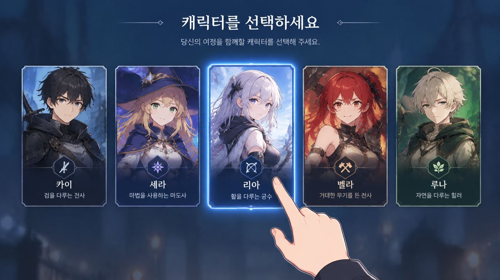
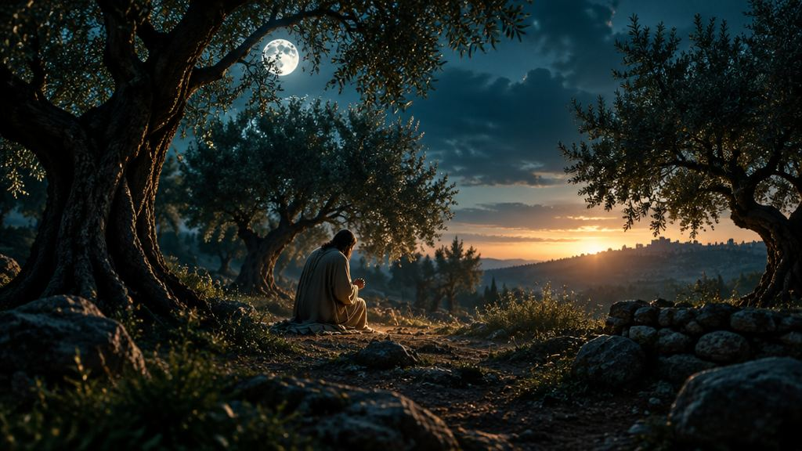

들어가며
3,000년 전의 리세마라
리세마라는 '리셋 마라톤'의 줄임말이에요. 원하는 캐릭터가 나올 때까지 게임을 초기화하고 다시 뽑는 거예요.
게임은 다시 하면 결과가 달라져도,
하나님의 말씀은 바뀌지 않습니다.
본문의 흐름
발락의 리세마라
모압 왕 발락은 이스라엘을 두려워해 발람을 불렀어요. 원하는 저주가 나올 때까지 장소를 바꿨지만, 결과는 세 번 모두 축복이었어요.
말씀을 붙들고 산다는 것은 하나님을 내 뜻에 맞추는 것이 아니라, 내 삶을 하나님의 뜻에 맞추어 가는 것입니다.
내 생각보다 하나님의 말씀을 따라야 합니다
민수기 23:27–30"오라 내가 너를 다른 곳으로 인도하리니 네가 거기서 나를 위하여 그들을 저주하기를 하나님이 혹시 기뻐하시리라"민수기 23:27 · 개역개정
발락이 바꾼 것
장소
일곱 제단을 다시 쌓고, 산을 세 번이나 옮겼어요.
정작 바꾸어야 했던 것
내 마음
하나님의 뜻을 받아들이지 않으려는 마음이었어요.
발락의 관심은 하나님의 뜻이 아니라 자신이 원하는 결과였어요. 하지만 교회에서의 말씀과 학교에서의 말씀은 다르지 않아요. 하나님의 말씀은 어디서나 같아요.
나는 누구를 따라가고 있나요?
"주의 말씀은 내 발에 등이요 내 길에 빛이니이다"시편 119:105
"기록되었으되" 예수님은 광야의 시험 앞에서 하나님의 말씀으로 시험을 물리치셨어요(마 4장). 상황이 바뀐다고 말씀까지 바뀌지 않아요.
하나님의 말씀으로 세상을 바라보아야 합니다
민수기 24:1–7"야곱이여 네 장막들이, 이스라엘이여 네 거처들이 어찌 그리 아름다운고… 강가의 동산 같으며 물가의 백향목들 같도다"민수기 24:5–6 · 개역개정
그때 이스라엘은 광야에 있었어요. 그런데 하나님은 그들을 물이 풍성한 동산에 비유하셨어요. 완벽해서가 아니라, 하나님의 약속과 돌보심을 보여 주신 거예요.
눈앞의 현실
광야 · 부족함 · 불안
발락은 이스라엘을 위협으로만 봤어요.
말씀으로 보는 현실
동산 · 물가 · 약속
하나님은 약속하신 복을 보여 주셨어요.
- 왕하 6
엘리사의 사환
아람 군대는 그대로였지만, 눈이 열리자 산에 가득한 불말과 불병거를 보았어요.
- 엡 1
"마음의 눈을 밝히사"
상황은 그대로, 바라보는 눈이 열립니다.
- 현실을 무시하거나, 모든 일을 그냥 긍정적으로 생각하는 게 아니에요.
- 예수 그리스도를 통해 나타난 하나님의 사랑과 약속을 신뢰하며 바라보는 거예요.
하나님의 약속을 신뢰하며 말씀에 순종해야 합니다
민수기 24:8–9"너를 축복하는 자마다 복을 받을 것이요 너를 저주하는 자마다 저주를 받을지로다"민수기 24:9 · 창세기 12:3과 연결
- 아브라함에게 주신 약속
- 광야에서도 지키신 약속
- 예수님 안에서 완성된 약속
- 오늘 우리에게 이어지는 약속
발람
말씀을 말하기
말씀을 전했지만 불의의 삯을 사랑했어요(민 31:16, 벧후 2:15).
하나님의 백성
말씀대로 살기
약속은 사람의 완전함이 아니라 하나님의 신실하심에 달려 있어요.
말씀을 붙드는 매일의 선택
"먹든지 마시든지 무엇을 하든지 다 하나님의 영광을 위하여 하라"고린도전서 10:31

겟세마네의 기도
"내 원대로 되기를 원하지 마시옵고
아버지의 원대로 되기를 원하나이다"
발락은 이스라엘에게 저주를 원했지만, 예수님은 우리를 위하여 저주를 받은 바 되셨습니다. 아브라함의 복이 그리스도 예수 안에서 우리에게 이르렀습니다.
누가복음 22:42 · 갈라디아서 3:13–14오늘의 중심 말씀
"하나님은 사람이 아니시니
거짓말을 하지 않으시고
인생이 아니시니 후회가 없으시도다"
이번 주 세 가지만
말씀을 붙드는 한 주
축복합니다
말씀을 아는 것에서 멈추지 말고,
말씀을 붙들고 살아갑시다
이번 한 주간도 하나님의 말씀을 삶의 기준으로 삼고, 하나님의 영광을 위해 살아가는 청소년부 여러분이 되기를 주님의 이름으로 축복합니다.